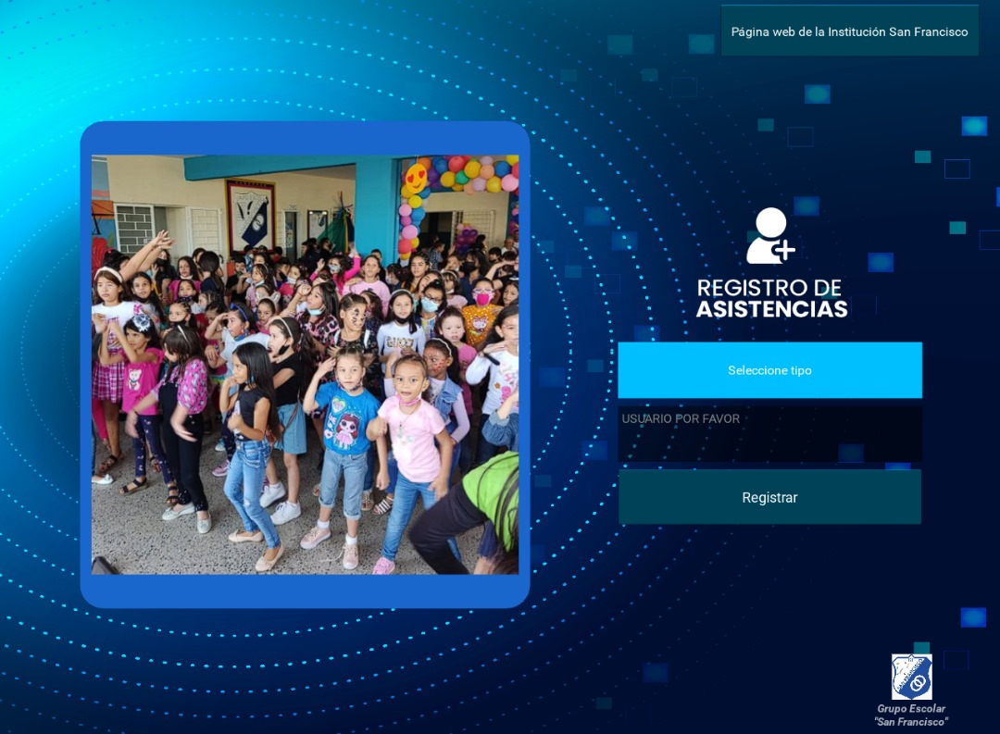
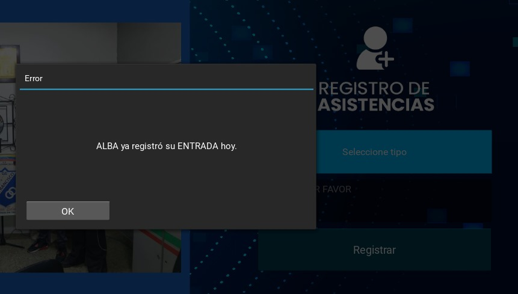
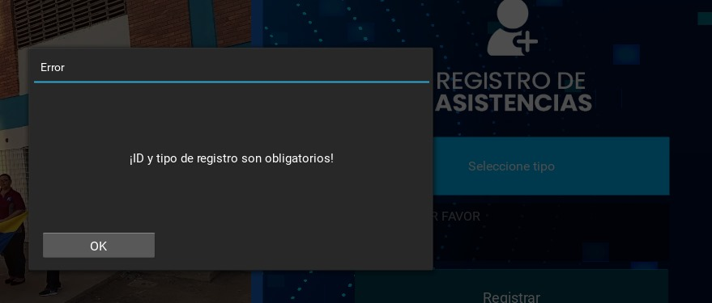
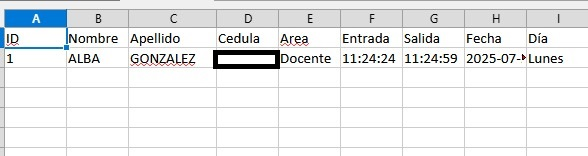
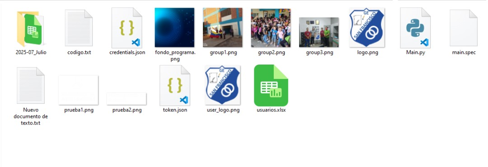

Volver a Proyectos
Registro de Asistencias para la Institucion Grupo Escolar San Francisco
Este sistema de registro de asistencias está diseñado para ser rápido, flexible y completamente funcional en modo offline, lo que garantiza su operación sin necesidad de conexión a internet. Actualmente, ya tiene su version online aun asi esta edición actual ya ofrece un rendimiento excepcional con características clave que facilitan el control diario de entradas y salidas.
- Selección manual de entrada o salida: Un botón intuitivo permite al usuario elegir si está registrando una entrada o una salida.
- Ampliable y personalizable: Incluye una lista predeterminada de IDs de usuarios que puede modificarse según las necesidades.
- Organización automática de datos: Crea automáticamente una carpeta para cada mes y un archivo diario dentro de ella.
- Durabilidad y eficiencia: Diseñado para funcionar durante largos períodos sin problemas.
- Mensajes y control de errores Diseñado para funcionar durante largos períodos sin problemas.
Galería del Proyecto

Interfaz principal del sistema

Selección de entrada/salida

mensaje para el manejo de errores

Estructura del excel generado

archivos de registro diario